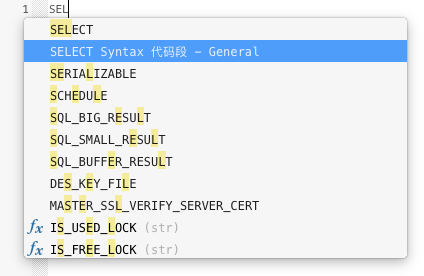

代码段（仅适用于非 Essentials 版本）
代码段为在编辑器中工作时将可重用的代码插入到语句或脚本中提供了一种简单的方法。代码段窗格位于编辑器的右侧。如果编辑器窗口停靠在 Navicat 主窗口内，你可以点击在信息窗格中的 图标来打开代码段库。
代码段库包含所有内置和用户定义的片段。从下拉式菜单中选择一个标签，或在搜索框中输入搜索字符串来筛选代码段列表。如果你想根据数据库类型显示可用的片段，你可以按住 Control 键并点按代码段库的任意位置，然后禁用“显示其他数据库类型的片段”。
内置的片段是不可编辑的。在代码段库中双击用户定义的片段，然后点击“编辑”来编辑它。如果你想隐藏内置的片段，你可以按住 Control 键并点按代码段库的任意位置，然后禁用“显示默认的片段”。
使用代码段
在编辑器中插入一个代码段有两种方法。
-
你可以在编辑器中开始输入代码段的名。智能自动完成代码功能将弹出自动完成单词的建议列表。从列表中选择一个片段名，已保存的代码将被插入到编辑器中。
 你可以将代码段库中的代码段拖放到编辑器中。
将帶有占位符的代码段插入编辑器后，你可以轻松地定位到它们，点击其中一个占位符，然后使用 TAB 键并输入信息。
创建代码段
你可以创建自己的代码段并将其加到代码段库中。若要创建一个代码段，请在编辑器中选择所需的代码，按住 Control 键并点按代码，然后选择“创建片段”。你亦可以简单地拖拉已选择的代码到代码段窗格。
或者，点击代码段窗格中的  。如果使用此方法，则必须在新建代码段窗口中手动输入代码，在编辑器中已选择的代码不会自动加到代码框中。
。如果使用此方法，则必须在新建代码段窗口中手动输入代码，在编辑器中已选择的代码不会自动加到代码框中。
【提示】代码段（.nsnippet）保存于默认的路径，例如：~/Library/Application Support/PremiumSoft CyberTech/Navicat CC/Common/Snippet。
选项或按钮 |
描述 |
未命名的文本框 |
输入在代码段库和自动完成代码列表中显示的片段名。 |
数据库类型 |
选择该片段的数据库服务器类型。 |
标签 |
为该片段选择一个现有的标签或输入一个新的标签名。 |
备註 |
输入代码段库中显示的片段的描述。 |
代码 |
输入代码。 |
高亮显示代码中的任何单词并点击此按钮来添加占位符。占位符将以浅绿色高亮显示。 |
|
在代码中高亮显示占位符，然后点击此按钮来移除它。 |